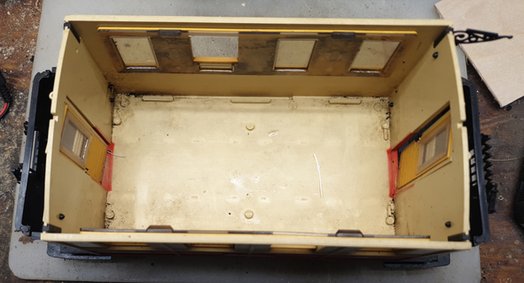
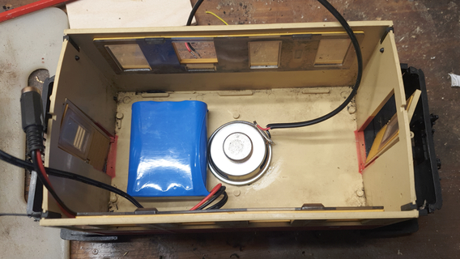
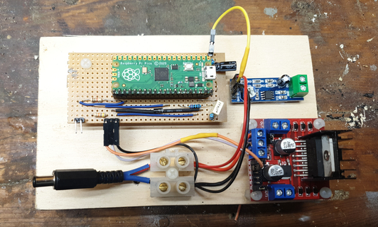
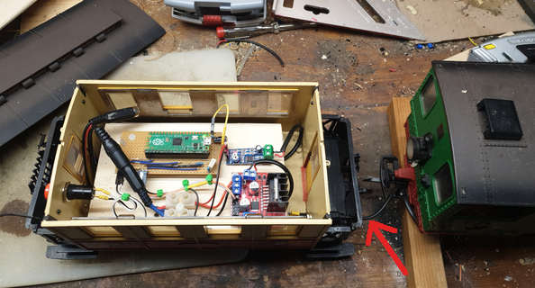
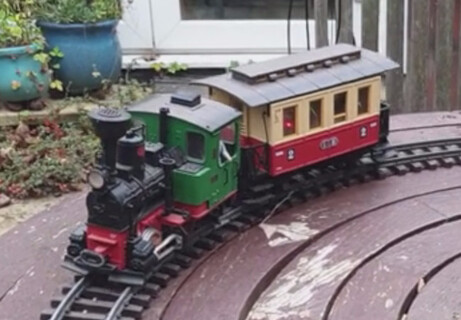

Using a Raspberry Pi Pico to control a large-scale model locomotive – part 2

In an earlier article I described how to use a Raspberry Pi Pico as the controller for a G (“garden”) -scale model train. The Pico provides realistic acceleration and deceleration of the train, while playing sampled locomotive noises. Of course, because these locomotives have comparatively high current requirements – perhaps up to ten amps – we need more than just a Pico and a loudspeaker. The earlier article described the electronic design, and outlined the software. I was reluctant to give many details of the actual construction, because I’m not an expert modeller, and I’m all too aware that a person who had that kind of expertise would make a better job of it. Still, since a couple of people have written to me for more details, I’ll describe the construction in this article. I’m not going to elaborate on the electronics or the software, since these haven’t changed since the previous article.
Design overview
I’m using an LGB Stainz starter set for my experiments. It consists of a model steam loco, a couple of coaches, and a circle of track. The changes I had to make were destructive, and I wouldn’t use anything more expensive than this set. In fact, I probably wouldn’t have embarked on this project at all, if the set wasn’t already twenty years old and beaten half to pieces by two generations of kids.
There isn’t room to put the battery and controller in the locomotive – not, at least, with my skills. In fact, there’s no room in the locomotive at all: the space that isn’t taken up by the electric motor and gearbox houses a huge metal ballast, which is needed to give the wheels traction on the rails.
Instead, I installed the battery and controller in one of the coaches, which the locomotive pulls along behind it.
Modifying the locomotive
It’s easy enough to open up the locomotive: just remove the three screws on the bottom, which allows the plastic shell to lift off. I soldered a 30cm length of two-core automotive cable to the motor terminals, and ran it out through a hole I drilled in the bottom of the motor housing, to the rear of the loco. The cable terminates in a 6.3mm barrel connector, and is just long enough to reach a matching socket in the following coach.
Bear in mind that the motor might draw ten amps at times, so the cable and connectors need to be sturdy.
Preparing the coach
The roof of the coach just pulls off. Most of the interior is taken up by seats, which need to be removed. If there’s a way to do this without damaging them, I couldn’t find it. With the seats removed, we have a large, clear area for the installation.

Fitting the battery and loudspeaker
These mount on the floor of the coach, with the electronics on a platform above them.
I tried to leave room for a second battery pack, in case a single one proved insufficient. In practice, I found that a single battery pack is fine for a few coaches on a level track.

I drilled holes under the loudspeaker to make it more audible. This might not have been necessary – it’s plenty loud enough. I fastened the battery to the floor of the coach with hook-and-eye tape, so I can take it out if necessary.
Note that the battery I’m using has two connectors – one for the load, and one for charging. They’re both connected to the same terminals, and a single connector would have been fine.
Although it’s not visible in the photo (because I took it too early) I had to drill the front wall of the coach to take the socket which the locomotive plugs into.
Assembling the electronics
I cut a piece of 3mm plywood just a little smaller than the interior of the coach, and attached four wooden dowels to raise it above the loudspeaker and battery. So it looks like a tiny coffee table.

On this wooden base I’ve mounted the Pico and my interface parts, the amplifier circuit, and the L398N motor controller module. The L398N is in the position it is because it needs high-current connections to the battery and the locomotive – the socket that connects the locomotive is just below it. I arranged the other parts to keep the connections reasonably short.
Putting it together
Now it’s just a case of putting the wooden platform on top of the speaker and battery, and connecting the various components and connectors on the coach body to the electronics. At the bottom left of the photo below, on the rear wall of the coach, is the start-stop switch. The coach roof mostly hides this when it’s in place.

The red arrow in the photo points to the place where the power cable to the locomotive passes through the coach’s front balcony, and connects to the socket on the front of the body of the coach. It would have been nice to have this connection in a less visible place, but the wheels of the coach (which have to be able to swing side-to-side) obstruct access to the underside. In practice, the coach roof mostly hides the connection, and the power cable looks a bit like a water hose, so it doesn’t look too conspicuous.
In use
Here’s a photo of the completed locomotive and coach. You can see the electronic parts through the coach windows, which I’ll probably obscure at some point.

The set-up works tolerably well, but there’s still some tweaking to do, to get a more realistic acceleration, and synchronize the “chuff” noises better to the wheel rotation.
Cost
Aside from the LGB loco and coach, which I already had, the most expensive part of the project was the battery pack (about £25, including charger). Nothing else cost more than a few pounds, so the total cost was about £40. Of course, I had to mutilate an expensive model.
Future work
If I designed a PCB for the electronics I could make the controller much smaller, and able to fit into, say, a tender rather than a coach. However, LGB tenders are ruinously expensive, and I doubt I could use a smaller battery, so I’m not sure it’s worth the effort.
Ideally, I’d use some kind of sensor on the wheels to match the loco sounds to the motion more precisely but, so far, nobody but me has remarked on the lack of complete realism.
There’s capacity in the Pico’s ROM for additional sounds (shouts, whistles, whatever) if I want them.
I’m currently building a much longer track, which will accomodate a number of model stations. When it’s finished, I’m planning to use additional sensors – magnets, perhaps – to have the train stop in stations, rather than at random times as it currently does.
It would be nice to be able to make the modifications I described in this article in a non-damaging way, so I could apply them to more expensive models.
Have you posted something in response to this page?
Feel free to send a webmention
to notify me, giving the URL of the blog or page that refers to
this one.